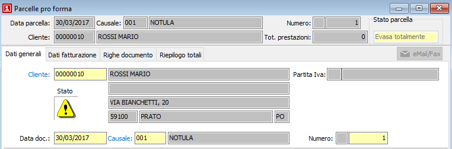
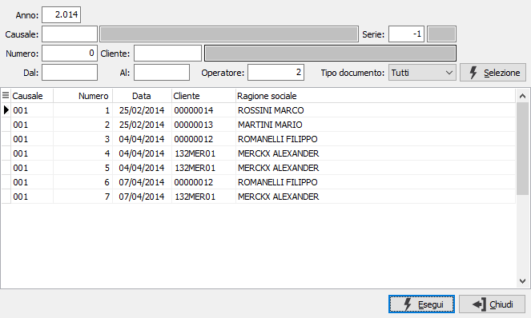

Introduzione
Il programma di gestione si struttura su quattro finestre video (linguette). Le finestre video sono comuni per tutte le causali utilizzate; tuttavia alcuni campi qui descritti possono essere assenti ove la configurazione attivata non ne preveda la gestione.
La numerazione è progressiva, nell’ambito dell’anno e della serie sezionale prevista dalla causale utilizzata.
Il programma gestisce la concorrenza, in caso di multiutenza. Il numero assegnato all’inizio della registrazione potrebbe variare, previa idonea segnalazione, al momento della conferma nel caso in cui un secondo utente abbia concluso il proprio documento prima del primo utente.
Poiché l’inserimento di un documento si sviluppa secondo una sequenza logica, il passaggio da una linguetta alla successiva è sequenziale: confermando con il tasto Invio sull’ultimo campo di una linguetta, si passa al primo campo della successiva. Il tasto pagina giù determina il passaggio alla linguetta successiva, qualsiasi sia il campo in cui è posizionato il cursore; per contro, il tasto pagina su comporta il passaggio al primo campo della linguetta precedente. Naturalmente è possibile utilizzare il mouse agendo sulle linguette relative alla finestra video da attivare.
Accedendo al programma, si presenta la prima sezione video:

Al momento del primo accesso al programma, lo stesso si situa in modalità di Visualizzazione e presenta a video l’ultimo documento inserito oppure una maschera vuota se previsto da configurazione di non visualizzare nessun documento all'avvio. Nella parte in alto a destra è presente, l'indicazione dello stato: inevaso, evaso o parzialmente evaso. Sul doppio clic si apre la griglia dell’analisi evasione righe documento.
Il cursore si posiziona sul campo cliente. Su questo campo l’utente deve definire il tipo di azione che intende compiere. In altre parole, deve decidere se inserire nuovi documenti, oppure visualizzare, modificare, cancellare o stampare documenti esistenti. L’azione da compiere può essere comandata tramite la pressione di alcuni pulsanti della tool bar o tramite l’uso dei corrispondenti tasti funzione.
Ricerca e visualizzazione di un documento
Cliccando due volte sul campo cliente o premendo il tasto funzione F9, si apre la finestra video di Ricerca.
La finestra video di Ricerca presenta in primo luogo il pannello di input costituito da alcuni campi per inserire “filtri” o parametri di ricerca che consentono di limitare il numero di documenti da presentare a video.
E’ possibile infatti indicare l’anno a cui si riferiscono i documenti da individuare, oppure il codice (con possibilità di ricerca tramite lo zoom F9) della causale da ricercare, oppure il codice (con possibilità di ricerca tramite lo zoom F9) del cliente a cui si riferiscono i documenti da ricercare, oppure le date di inizio e fine ricerca, il tipo di documento (da evadere, evaso oppure tutti), o più parametri fra quelli indicati. Conoscendolo, è possibile indicare il numero del documento da ricercare.
Qualsiasi parametro si sia inserito, occorre attivare la selezione cliccando sul bottone Selezione.
Attivata la selezione, nella griglia della sezione video inferiore vengono visualizzati tutti i documenti esistenti coerenti con i parametri di selezione inseriti.

Utilizzando i tasti freccia su o freccia giù, oppure usando il mouse, ci si posiziona sul rigo relativo al documento da trattare, selezionandolo quando una delle celle di tale rigo viene evidenziata. Cliccando quindi sul bottone Esegui o cliccando due volte sul rigo attivo, viene visualizzato il documento selezionato. Lo spostamento sui documenti presenti da questo momento è vincolato a quelli visualizzati nella finestra di ricerca, cioè ai documenti esistenti con applicati i filtri espressi nella ricerca stessa.
Modifica di un documento visualizzato
Una volta individuato il documento da modificare come meglio descritto al paragrafo “Ricerca e visualizzazione di un documento”, quando la sezione video “Dati generali” è completamente presente a video, è sufficiente premere il tasto funzione F3 oppure cliccare sul pulsante Modifica della tool bar.
Sulla barra di stato viene visualizzato lo stato di “Modifica” ed è possibile agire in variazione del documento stesso.
Cancellazione di un documento visualizzato
Una volta individuato il documento da cancellare come meglio descritto al paragrafo “Ricerca e visualizzazione di un documento”, quando la sezione video “Dati generali” è completamente presente a video, è sufficiente premere il tasto funzione F5 oppure cliccare sul pulsante Cancella della tool bar. Viene visualizzato il messaggio di conferma. Confermando tramite la pressione del bottone Sì, il documento viene cancellato a condizione che non abbia già subito trattamenti di evasione anche parziale.
Inserimento di un nuovo documento
Sul campo cliente, è sufficiente premere il tasto funzione F4 oppure cliccare sul pulsante Nuovo della toolbar. Sulla barra di stato viene visualizzato lo stato di “Inserimento” ed il cursore rimane sul campo cliente attivato per l’inserimento del codice.
Al termine di ciascun documento, il cursore si riposiziona sul campo cliente in situazione di inserimento, predisposto per un nuovo documento. Premendo una prima volta il tasto Esc il programma torna in stato di visualizzazione, da dove è possibile effettuare come già descritto la ricerca e l’eventuale modifica o cancellazione di un documento esistente. Premendo ancora Esc in stato di visualizzazione, si esce dal programma di Gestione.